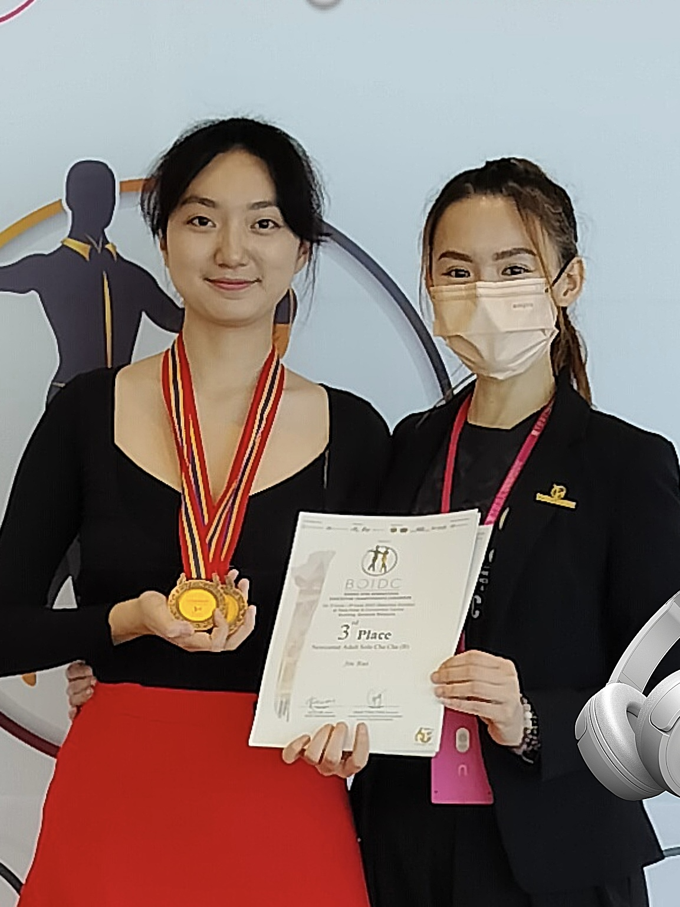
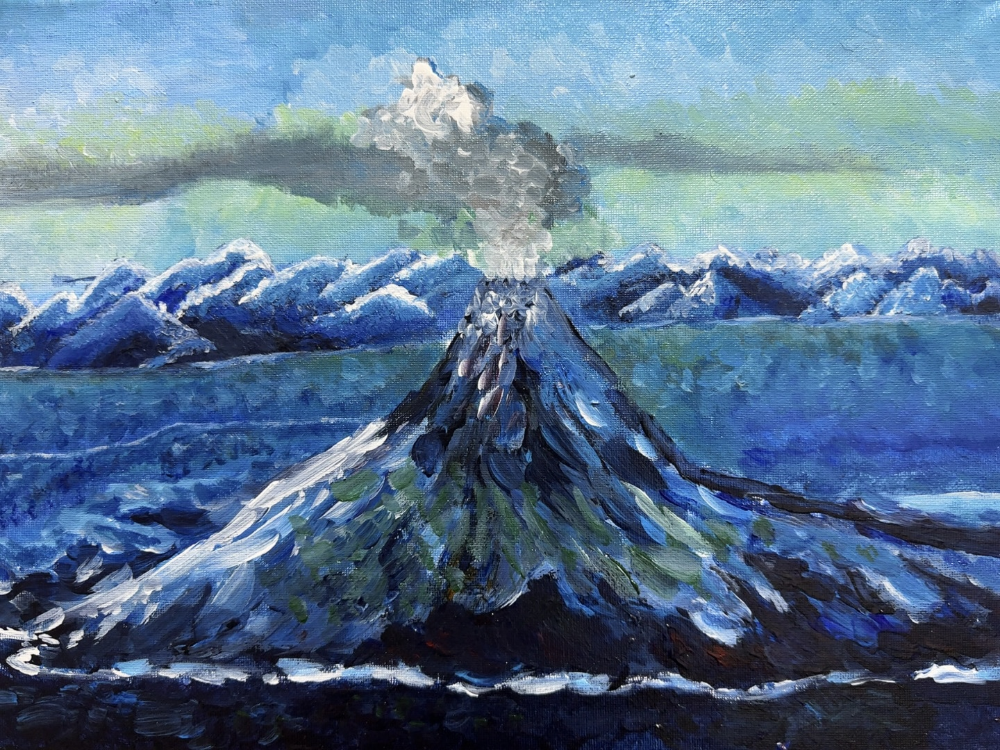

Can do a little bit

Music & Performing Arts: Erhu, Guitar, Latin Dance
音乐 & 表演艺术： 二胡、吉他、拉丁舞

Sports & Outdoor Activities:
Basketball, Badminton，Mountain running
体育&户外活动： 滑板、游泳、篮球、羽毛球，跑山

Art & Creativity: Acrylic painting, Pen calligraphy
艺术与创意： 丙烯画、钢笔书法
Others: Tarot Reading，Outbound trip
其他： 塔罗牌占卜, 出境旅游
Personal Interests
我喜欢去海边，看海吹风，享受阳光的温柔；也喜欢寻找各种美食，让味蕾感到幸福；更喜欢拍下生活中每一个漂亮的瞬间，记录美好。我始终珍惜那些真心对我好的人，我会一直喜欢他们。
I love going to the beach—feeling the breeze, soaking in the sunlight, and letting my heart breathe. I enjoy discovering delicious food that brings joy to my taste buds, and I love capturing beautiful moments through photos, turning memories into something lasting. Most of all, I will always cherish the people who treat me sincerely—they’ll always have a special place in my heart.